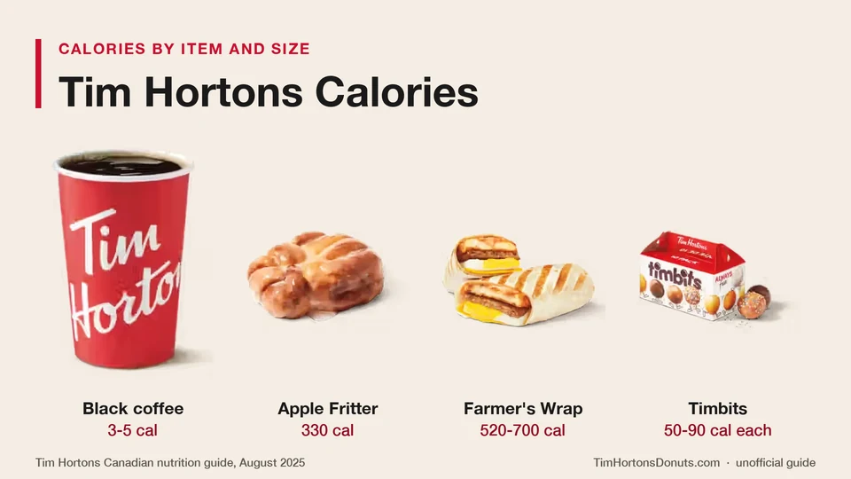

Unofficial fan guide - not affiliated with Tim Hortons
Tim Hortons calories for drinks by size and food by item, with the lowest and highest picks in every category and ten orders under 400 calories.
Full Menu / Blog / Tim Hortons Calories

Tim Hortons menu items run from 0 calories for a steeped tea to 930 for a Hat Trick Flatbread Pizza. A black coffee has 3 to 5 calories, a medium Double Double 200, a Boston Cream donut 240, a Timbit 50 to 90, and a medium Original Iced Capp 330.
This page lists Tim Hortons calories for the Canadian menu, with drinks broken out by size and food ranked from lowest to highest. Every count comes from Tim Hortons' August 2025 nutrition guide. For fat, sodium, sugar and protein, see our Tim Hortons nutrition facts page.
The gap between the lightest and heaviest item in a category is often larger than the gap between categories. A Sugar Loop donut and a Chocolate Cruller are 160 calories apart. Two breakfast sandwiches can be 360 apart.
| Category | Lowest calories | Highest calories |
|---|---|---|
| Hot drinks (medium) | Steeped tea: 0; black coffee: 4 | French Vanilla and White Hot Chocolate: 330 |
| Cold drinks (medium) | Pineapple Dragon Fruit or Strawberry Watermelon Sparkling Quencher: 60 | Vanilla Creamy Chill: 560 |
| Donuts | Sugar Loop: 200 | Chocolate Cruller, Maple Cruller, Toasted Coconut and Chocolate Toasted Coconut: 360 |
| Timbits (each) | Honey Dip, Strawberry and Venetian Cream: 50 | Sour Cream Glazed, Toasted Coconut and Chocolate Toasted Coconut: 90 |
| Muffins | Banana Pecan: 340 | Chocolate Chip: 420 |
| Cookies and brownies | Chocolate Chunk Cookie and Oreo Chunk Cookie: 310 | Chocolate Chunk Brookie and Double Chocolate Brownie: 410 |
| Bagels (no topping) | Plain, Everything and Cinnamon Raisin: 290 | Four Cheese: 330 |
| Breakfast sandwiches | Egg & Cheese English Muffin: 270 | Sausage 12-Grain Bagel Sandwich: 630 |
| Breakfast wraps | Bacon Breakfast Wrap: 400 | Sausage & Bacon Farmer's Wrap: 700 |
| Lunch sandwiches and melts | Steak Craveable: 450 | Supreme Stack: 620 |
| Lunch wraps | Classic Chicken Wrap: 380 | Cilantro Lime Crispy Chicken Loaded Wrap: 690 |
| Loaded Bowls | Habanero Chicken: 530 | Cilantro Lime Crispy Chicken: 710 |
| Flatbread Pizzas | Simply Cheese: 630 | Hat Trick: 930 |
| Soups and chili (regular) | Cream of Broccoli and Garden Minestrone: 100 | Chili: 310 |
A black Tim Hortons coffee has 3 to 5 calories in any size. Everything above that comes from what is added: a medium Double Double has 200 calories, and a medium French Vanilla has 330.
| Hot drink | Small | Medium | Large | Extra large |
|---|---|---|---|---|
| Brewed coffee, black | 3 | 4 | 5 | 5 |
| Regular coffee (1 cream, 1 sugar) | 70 | 100 | 120 | 150 |
| Double Double | 130 | 200 | 250 | 300 |
| Cappuccino | 80 | 120 | 170 | n/a |
| Latte | 90 | 140 | 190 | n/a |
| Protein Latte | 110 | 170 | 230 | n/a |
| Coffee Mocha | 110 | 140 | 190 | 250 |
| French Vanilla | 260 | 330 | 430 | 570 |
| Hot Chocolate | 220 | 280 | 380 | 500 |
| White Hot Chocolate | 250 | 330 | 430 | 570 |
| London Fog | 110 | 160 | 240 | n/a |
Plain steeped tea and bagged tea have 0 calories. Sizing up a sweet drink costs more than most people expect. A French Vanilla goes from 260 calories in a small to 570 in an extra large. Prices for every size are on our coffee menu page.
Each cream adds 40 to 90 calories, each milk adds 15 to 40, and each sugar adds 30 to 60, depending on the cup size. Tim Hortons scales the serving to the cup, so "one cream" in a large is bigger than in a small.
| Add-in for hot coffee | Small | Medium | Large | Extra large |
|---|---|---|---|---|
| Cream, one serving | 40 | 60 | 80 | 90 |
| Milk, one serving | 15 | 20 | 30 | 40 |
| Sugar, one serving | 30 | 35 | 45 | 60 |
That is how a Double Double reaches 200 calories. A medium black coffee (4 calories) plus two creams (120) and two sugars (70) comes to 194. Swap the cream for milk and the same order is about 114 calories, which saves 80. A pump of flavoured syrup adds another 25 to 30.
Tim Hortons cold drinks run from 70 calories for a small Light Iced Coffee to 690 for a large Vanilla Creamy Chill. Iced coffee and cold brew sit at the low end, and blended frozen drinks sit at the high end.
| Cold drink | Small | Medium | Large |
|---|---|---|---|
| Light Iced Coffee | 70 | 100 | 140 |
| Unsweetened Iced Latte | 90 | 120 | 140 |
| Classic Lemonade | 90 | 110 | 140 |
| Original Iced Coffee | 120 | 150 | 240 |
| Original Cold Brew | 120 | 150 | 240 |
| Vanilla Cream Cold Brew | 120 | 160 | 240 |
| Original Iced Latte | 150 | 200 | 250 |
| Original Protein Iced Latte | 160 | 230 | 310 |
| Roasted Hazelnut Cold Brew | 180 | 220 | 300 |
| Light Iced Capp | 170 | 210 | 270 |
| Frozen Lemonade | 200 | 250 | 330 |
| Strawberry Frozen Lemonade | 250 | 310 | 410 |
| Original Iced Capp | 260 | 330 | 430 |
| Mocha Iced Capp | 430 | 530 | 650 |
| Caramel Iced Capp | 440 | 530 | 660 |
| Vanilla Iced Capp | 440 | 540 | 660 |
| Strawberry Creamy Chill | 450 | 550 | 680 |
| Chocolate Creamy Chill | 450 | 550 | 680 |
| Vanilla Creamy Chill | 450 | 560 | 690 |
A medium Original Iced Capp has 330 calories. The flavoured Iced Capps add 170 to 230 more, depending on the size. The Light Iced Capp cuts the Original by about a third.
Quenchers depend on the type. A medium Sparkling Quencher has 60 to 120 calories, a medium Lemonade Quencher has 120 to 180, and a medium Frozen Quencher has 340 to 400. The matcha lattes that launched in July 2026 run from 130 to 320 calories in a medium. See our Tim Hortons matcha page for those.
A Tim Hortons donut has 200 to 360 calories. Most of the classic yeast donuts have 220 to 250, and the cake donuts, crullers and coconut donuts have 280 to 360.
| Calories | Donuts |
|---|---|
| 200 | Sugar Loop |
| 220 | Chocolate Dip, Maple Dip, Powdered Venetian Cream, Strawberry Dip |
| 230 | Strawberry Swirl |
| 240 | Boston Cream, Long John, Strawberry Filled |
| 250 | Canadian Maple, Honey Dip, Maple Swirl, Vanilla Dip |
| 260 | Coconut Cream |
| 270 | Strawberry Vanilla |
| 280 | Old Fashioned Plain, Sour Cream Plain |
| 290 | Chocolate Snow, Old Fashioned Snow |
| 300 | Old Fashioned Sugar, Sour Cream Sugar |
| 310 | Chocolate Éclair, Double Chocolate, Maple Éclair, Old Fashioned Dip |
| 320 | Chocolate Marble, Honey Cruller |
| 330 | Apple Fritter, Chocolate Glazed, Old Fashioned Glazed |
| 340 | Sour Cream Glazed |
| 360 | Chocolate Cruller, Chocolate Toasted Coconut, Maple Cruller, Toasted Coconut |
A Boston Cream has 240 calories, a Honey Dip has 250 and an Apple Fritter has 330. The average across all 35 donuts in the guide is about 285 calories. See the donuts menu for prices.
One Timbit has 50 to 90 calories. The lightest are the yeast Timbits, and the heaviest are the sour cream and coconut ones.
| Calories | Timbits (per piece) |
|---|---|
| 50 | Honey Dip, Strawberry, Venetian Cream |
| 60 | Old Fashioned Plain |
| 70 | Chocolate Snow Ball, Old Fashioned Sugar, Snow Ball |
| 80 | Birthday Cake, Chocolate Glazed, Old Fashioned Glazed, Sour Cream Plain, Sour Cream Sugar |
| 90 | Chocolate Toasted Coconut, Sour Cream Glazed, Toasted Coconut |
A 10-pack has 500 to 900 calories, depending on the flavours in the box. Three Honey Dip Timbits come to 150 calories, which is less than any single donut. The Timbits menu has pack sizes.
Muffins are the heaviest baked goods at Tim Hortons, at 340 to 420 calories each. Cookies have 310 to 360, bagels have 290 to 330 before toppings, and a Plain Croissant has 260.
| Baked good | Calories |
|---|---|
| Four Cheese Savoury Twist | 220 |
| Herb & Garlic Savoury Pastry | 240 |
| Cheese Tea Biscuit | 250 |
| Raisin Tea Biscuit | 250 |
| Plain Croissant | 260 |
| Roasted Red Pepper & Swiss Pinwheel | 280 |
| Spinach & Feta Egg Pastry | 280 |
| Cheese Croissant | 290 |
| Cinnamon Raisin Bagel | 290 |
| Everything Bagel | 290 |
| Plain Bagel | 290 |
| Blueberry Bagel | 310 |
| Chocolate Chunk Cookie | 310 |
| Oreo Chunk Cookie | 310 |
| Sesame Seed Bagel | 310 |
| 12-Grain Bagel | 320 |
| Jalapeño Asiago Mozzarella Bagel | 320 |
| Four Cheese Bagel | 330 |
| Banana Pecan Muffin | 340 |
| Chocolate Croissant | 350 |
| Reese's Minis Dream Cookie | 350 |
| Carrot Cake Walnut Muffin | 360 |
| Dream Cookie made with M&M Minis | 360 |
| Fruit Explosion Muffin | 360 |
| Raisin Bran Muffin | 380 |
| Wild Blueberry Muffin | 380 |
| Pumpkin Spice Muffin | 390 |
| Chocolate Chunk Brookie | 410 |
| Double Chocolate Brownie | 410 |
| Chocolate Chip Muffin | 420 |
Bagel toppings count too. Plain cream cheese adds 100 calories, peanut butter adds 110, and butter or a jam packet adds 60. A Plain Bagel with cream cheese is 390 calories. Prices are on the muffins menu and bagel menu.
Tim Hortons breakfast items have 120 to 700 calories. The bread and the meat decide most of it. An English muffin is the lightest base and a bagel is the heaviest, and sausage adds about 120 calories over bacon.
| Breakfast item | Calories |
|---|---|
| Hash Brown | 120 |
| Spinach & Egg White Omelette Bites (2) | 130 |
| Bacon & Cheese Omelette Bites (2) | 210 |
| Yogurt Parfait | 250 |
| Egg & Cheese English Muffin | 270 |
| Bacon English Muffin | 330 |
| Egg & Cheese Homestyle Biscuit | 350 |
| Bacon Breakfast Wrap | 400 |
| Bacon Homestyle Biscuit | 410 |
| Scrambled Egg & Cheese Loaded Croissant | 410 |
| Scrambled Egg Loaded Box | 440 |
| Sausage English Muffin | 450 |
| Simply Sausage Homestyle Biscuit | 450 |
| Bacon Scrambled Egg Loaded Croissant | 460 |
| Scrambled Egg & Cheese Loaded Wrap | 470 |
| Bacon Plain Bagel Sandwich | 480 |
| Bacon Scrambled Egg Loaded Box | 490 |
| Plain Bagel BELT Sandwich | 490 |
| Bacon 12-Grain Bagel Sandwich | 510 |
| Steak & Egg Homestyle Biscuit | 510 |
| 12-Grain Bagel BELT Sandwich | 520 |
| Bacon Farmer's Wrap | 520 |
| Bacon Scrambled Egg Loaded Wrap | 530 |
| Sausage Breakfast Wrap | 530 |
| Sausage Homestyle Biscuit | 530 |
| Sausage & Bacon Breakfast Wrap | 580 |
| Sausage Scrambled Egg Loaded Croissant | 590 |
| Sausage Plain Bagel Sandwich | 600 |
| Sausage Scrambled Egg Loaded Box | 600 |
| Sausage 12-Grain Bagel Sandwich | 630 |
| Sausage Farmer's Wrap | 640 |
| Sausage Scrambled Egg Loaded Wrap | 650 |
| Sausage & Bacon Farmer's Wrap | 700 |
A Hash Brown adds 120 calories to any order. The Farmer's Wrap is heavier than the regular Breakfast Wrap because it has a hash brown inside: the bacon version is 520 calories against 400. See the breakfast menu for prices.
Tim Hortons lunch items have 100 to 930 calories. Soups are the lightest, sandwiches and wraps sit between 380 and 690, and the Flatbread Pizzas are the heaviest items on the menu.
| Lunch item | Calories |
|---|---|
| Cream of Broccoli Soup (regular) | 100 |
| Garden Minestrone Soup (regular) | 100 |
| Chicken Noodle Soup (regular) | 140 |
| Garden Minestrone Soup (large) | 140 |
| Clam Chowder (regular) | 150 |
| Cream of Broccoli Soup (large) | 150 |
| Tomato Parmesan Soup (regular) | 150 |
| Potato Wedges | 170 |
| Spicy Thai Soup (regular) | 170 |
| Chicken Noodle Soup (large) | 190 |
| Clam Chowder (large) | 210 |
| Soup Bun | 210 |
| Tomato Parmesan Soup (large) | 210 |
| Potato Bacon Soup (regular) | 220 |
| Spicy Thai Soup (large) | 240 |
| Chili (regular) | 310 |
| Potato Bacon Soup (large) | 310 |
| Classic Chicken Wrap | 380 |
| Garlic Bread | 380 |
| Chicken Bacon Ranch Wrap | 420 |
| Chili (large) | 430 |
| Steak Craveable | 450 |
| Crispy Chicken Craveable | 470 |
| BLT Sandwich | 490 |
| Classic Crispy Chicken Wrap | 490 |
| Grilled Cheese Melt | 500 |
| Ham & Cheddar Sandwich | 520 |
| Crispy Chicken Bacon Ranch Wrap | 530 |
| Habanero Chicken Loaded Bowl | 530 |
| Habanero Veggie Loaded Wrap | 540 |
| Cilantro Lime Chicken Loaded Bowl | 550 |
| Habanero Veggie Loaded Bowl | 550 |
| Ham Melt | 550 |
| Turkey Bacon Club Sandwich | 550 |
| Turkey Melt | 550 |
| Habanero Chicken Loaded Wrap | 560 |
| Steak & Cheddar Sandwich | 560 |
| Cilantro Lime Veggie Loaded Bowl | 570 |
| Cilantro Lime Veggie Loaded Wrap | 570 |
| Cilantro Lime Chicken Loaded Wrap | 590 |
| Bacon Grilled Cheese Melt | 600 |
| Supreme Stack Sandwich | 620 |
| Simply Cheese Flatbread Pizza | 630 |
| Habanero Crispy Chicken Loaded Wrap | 660 |
| Cilantro Lime Crispy Chicken Loaded Wrap | 690 |
| Habanero Crispy Chicken Loaded Bowl | 690 |
| Cilantro Lime Crispy Chicken Loaded Bowl | 710 |
| Pepperoni Flatbread Pizza | 750 |
| Chicken Parmesan Flatbread Pizza | 760 |
| Bacon Everything Flatbread Pizza | 780 |
| Hat Trick Flatbread Pizza | 930 |
Choosing the regular chicken over crispy chicken saves about 100 calories in the same wrap. A Classic Chicken Wrap is 380 calories and the crispy version is 490. Prices are on the lunch menu and wraps menu.
Plenty, if you pair a light food item with a plain drink. These ten orders all come in under 400 calories. The totals are our own addition of the guide's figures.
| Order | Calories |
|---|---|
| Egg & Cheese English Muffin + medium black coffee | 274 |
| Regular Chili + steeped tea | 310 |
| Boston Cream donut + small Cappuccino | 320 |
| Bacon English Muffin + steeped tea | 330 |
| Yogurt Parfait + small Latte | 340 |
| Spinach & Egg White Omelette Bites + Hash Brown + small Latte | 340 |
| Regular Chicken Noodle Soup + Soup Bun | 350 |
| Three Honey Dip Timbits + medium Double Double | 350 |
| Classic Chicken Wrap + medium black coffee | 384 |
| Plain Bagel + plain cream cheese | 390 |
It is just as easy to go the other way. A Sausage & Bacon Farmer's Wrap (700), a Hash Brown (120) and a medium Double Double (200) total 1,020 calories. That is about half of a 2,000-calorie day in one breakfast.
They are standard-recipe figures, so treat them as close guides and not exact measurements. Tim Hortons says its numbers are based on standard product formulations. It adds that they can vary with suppliers, ingredient substitutions, recipe changes, assembly in the restaurant and the time of year, and that baked goods may vary in size.
Menu-board calories are also a legal requirement in Ontario. The Healthy Menu Choices Act has required food-service chains with 20 or more Ontario locations to post calories since January 1, 2017. Since 2018, menus must also carry this statement: adults and youth aged 13 and older need an average of 2,000 calories a day, and children aged 4 to 12 need an average of 1,500, though individual needs vary.
Custom orders change the count. Extra cream, a flavour shot, cheese or a sauce is not included in the standard figure. Limited-time items may not be in the guide at all, so check the menu board or the app for those.
A Tim Hortons Boston Cream donut has 240 calories. It also has 8 g of fat and 16 g of sugar, according to the August 2025 nutrition guide.
An Original Iced Capp has 260 calories in a small, 330 in a medium and 430 in a large. The Light Iced Capp has 170, 210 and 270. Flavoured Iced Capps run from 430 to 660.
A Bacon Farmer's Wrap has 520 calories and a Sausage Farmer's Wrap has 640. The Sausage & Bacon Farmer's Wrap is the heaviest breakfast item, at 700 calories.
A French Vanilla has 260 calories in a small, 330 in a medium, 430 in a large and 570 in an extra large. It is one of the highest-calorie hot drinks on the menu.
A Tim Hortons Hot Chocolate has 220 calories in a small, 280 in a medium, 380 in a large and 500 in an extra large. The White Hot Chocolate is higher, at 250 to 570.
The Sugar Loop Donut is the lowest, at 200 calories. The Chocolate Dip, Maple Dip, Strawberry Dip and Powdered Venetian Cream donuts are next, at 220 calories each.
The Hat Trick Flatbread Pizza is the highest-calorie item in the nutrition guide, at 930 calories. The highest-calorie drink is a large Vanilla Creamy Chill, at 690.
One Tim Hortons Hash Brown has 120 calories, with 6 g of fat and 15 g of carbohydrates.
A regular Tim Hortons Chili has 310 calories and a large has 430. Adding a Soup Bun brings a regular order to 520 calories.
A Tim Hortons muffin has 340 to 420 calories. The Banana Pecan Muffin is the lightest and the Chocolate Chip Muffin is the heaviest.
A Plain Bagel with plain cream cheese has 390 calories: 290 for the bagel and 100 for the cream cheese. A Four Cheese Bagel with cream cheese comes to 430.
A large Double Double has 250 calories and an extra large has 300. A small has 130 and a medium has 200.
A 10-pack of Timbits has 500 to 900 calories, because each Timbit has 50 to 90. A box of the lightest flavours is about the same as two donuts.
This is an independent, unofficial guide. It is not affiliated with, endorsed by, or sponsored by Tim Hortons or Restaurant Brands International. Calorie counts are copied from Tim Hortons' Canadian nutrition guide (August 2025) and are based on standard recipes, so they can vary by restaurant, by customisation and over time. Combined totals are our own addition. This page is general information, not medical or dietary advice. See Sources.